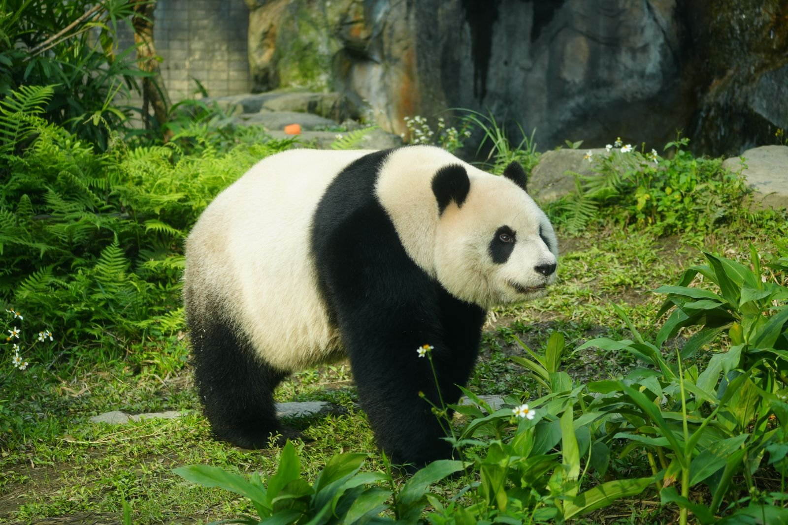

타이베이 3박5일 일정, 널널하게 짜려면 하루에 몇 곳?
밤 비행기로 출발해 새벽에 돌아오는 3박5일 — 첫날과 마지막 날을 비워 두면 여행이 훨씬 여유로워져요.
게시
"욕심내서 넣다 보니 하루에 다섯 곳이 됐어요." 타이베이 3박5일 일정은 실제로 쓸 수 있는 날이 3일 남짓이라, 하루 큰 일정 두 개 정도가 적당해요. 명소별 공식 운영 시간과 실제 여행자들의 경험을 바탕으로 널널한 코스를 정리해봤어요.
01 · 타이베이 3박5일 일정 예시
| 오전 | 오후·저녁 | |
|---|---|---|
| 1일차(밤 도착) | — | 숙소 체크인, 휴식 |
| 2일차 | 중정기념당 교대식 | 딤섬 점심, 시내 산책 |
| 3일차 | 예류·스펀·지우펀 근교 투어 | 투어 복귀 후 휴식 |
| 4일차 | 시립동물원 | 마오콩 곤돌라, 야경 |
| 5일차(새벽 출발) | — | 공항 이동 |
02 · 명소별 운영 시간 확인
중정기념당 09:00~18:00 개방, 제야·춘절 초1·228기념일 휴관이에요. 의장대 교대식은 09:00~17:00 매시 정각에 열리고 비가 오면 취소돼요(2026년 9월 기준).
마오콩 곤돌라 평일 09:00~21:00, 휴일 09:00~22:00 운행해요. 일부 월요일은 정기 점검으로 쉬어요(10월 12일, 11월 9·23·30일, 12월 14·28일, 2026년 9월 기준). 날씨에 따라 멈추기도 하니 당일 운행 공지를 확인하세요.
시립동물원 09:00~17:00 운영, 입장은 16:00까지예요(2026년 9월 기준). 판다관 같은 실내관은 월요일에 관별로 돌아가며 쉬어요.
03 · 널널하게 만드는 요령
동물원과 마오콩은 같은 날 동물원역과 곤돌라 역이 가까워 한 날에 묶기 좋아요. 월요일이라면 곤돌라 점검일인지 먼저 확인하세요.
근교 투어는 하루 통째로 예류·스펀·지우펀은 이동이 길어 다른 일정을 넣지 않는 게 좋아요.
비 오는 날 대안 교대식이 취소될 수 있으니 실내 명소를 하나 준비해두세요.

04 · 첫날과 마지막 날은 비워 두세요
밤에 도착하는 첫날과 새벽에 떠나는 마지막 날은 일정을 넣지 않는 게 좋아요. 딤섬집이나 야시장처럼 줄이 긴 곳은 예약이 되는지 미리 확인하고, 근교 투어는 좌석과 코스를 업체 안내로 다시 확인하세요.
"하루 큰 일정 두 개, 첫날과 마지막 날은 비우기." — 타이베이를 여유롭게 다녀온 여행자들의 조언을 요약했습니다.
2일차 딤섬 점심은 타이베이 딤섬 맛집에서 고르고, 동선이 맞는다면 바팡윈지 중샤오둔화점처럼 간단한 만두집도 좋아요. 숙소 주변 식당은 타이베이 맛집 지도, 근교 투어 날 먹을 곳은 지우펀 맛집 지도에서 볼 수 있어요.
지도에서 타이베이 맛집을 찾아보세요
일정 사이에 들르기 좋은 타이베이 식당을 지도에서 확인해보세요.